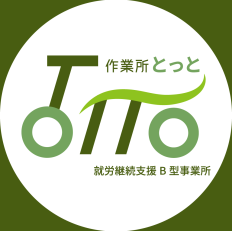
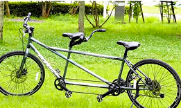
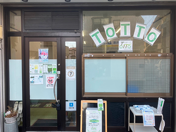
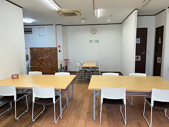

ロゴにかけた想い


タンデム自転車（二人乗り自転車）をイメージしました。 利用者の方と支援者が前後で乗ります。
タンデム自転車は、息を合わせて漕がないと上手く前に進みません。 時には急いで、時にはゆっくり（たまには自転車から降りて ゆっくり休むのも良し）そんな一人ひとりのペースに合わせて、 それぞれの“夢”に向かって進むことの出来る事業所にしたくて、 このようなロゴにしました。


事業所概要
| 事業所名 |  |
| 事業所区分 | 就労継続支援B型事業所 [事業所番号 1312901729] |
| 開設日 | 令和６年５月１日 |
| 定員 | 20名 |
| 所在地 | 〒183-0015 東京都府中市清水が丘3-26-18 |
|
|
|
|
利用可能日：月曜日〜金曜日 開所時間 10:00-17:00 1時間から利用可能 |
|
| 運営法人 | 合同会社マルケ |
| 代表者 | 代表社員 佐藤 顕仁 |